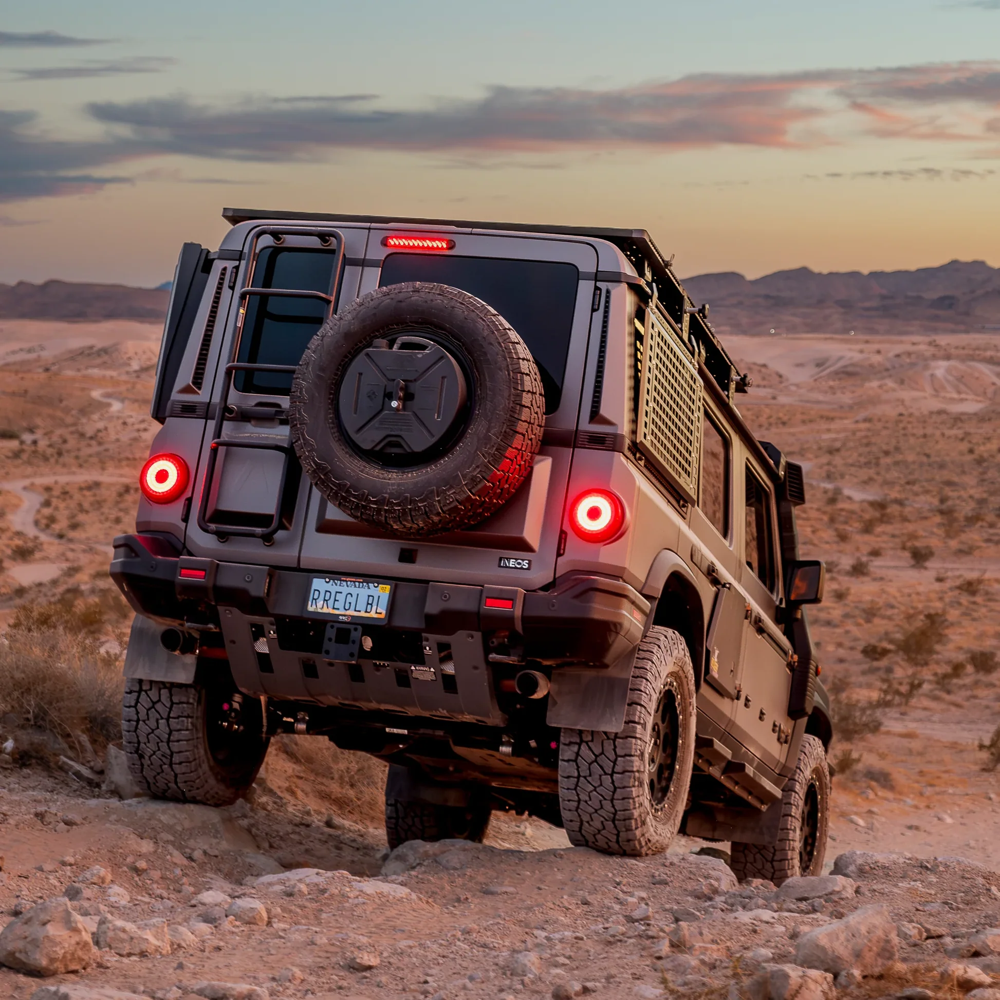
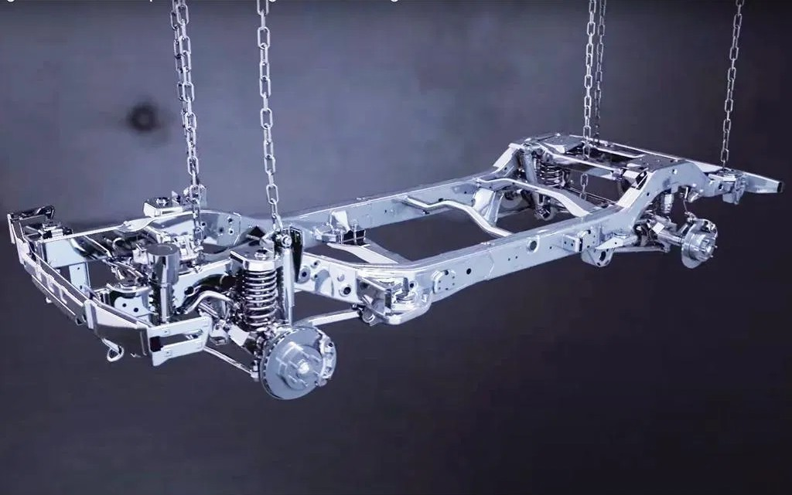

Defending history
Om Ineos Grenadier
Det finns fordon som tar dig från punkt A till punkt B. Och så finns det Ineos Grenadier – skapad för dig som vägrar låta vägen sätta gränserna. Med klassisk, kompromisslös design, en robust stege-ram i stål och permanent fyrhjulsdrift är Grenadier byggd för att bemästra världens mest krävande terräng. Oavsett om du söker nästa stora äventyr, behöver en outtröttlig arbetshäst i tuff miljö eller bara vill ha en 4x4-ikon med ren körglädje, levererar Grenadier när andra backar undan. Varje detalj är genomtänkt för funktion och maximal tillförlitlighet utan onödigt prål. Med kraftfulla 3.0-liters sexcylindriga motorer från BMW och en smidig 8-stegad automatväxellåda tar du dig an branta stigningar, djup snö och hård lera med fullständig kontroll. Den oömma interiören är utformad för att tåla stryk och enkla analoga reglage gör att du behåller precisionen även med tunga arbetshandskar på. Grenadier handlar inte bara om att nå fram – den handlar om friheten att välja din egen väg, oavsett hur obanad den är.

Inredning
En förarmiljö utformad som en cockpit med rejäla, analoga knappar som går att manövrera även med handskar på. Tåliga material som tål smuts och stänk – enkel att rengöra efter en dag ute i fält.

Prestanda
Under motorhuven sitter BMW:s raka sexcylindriga 3.0-liters motorer (bensin eller diesel) sammankopplade med en 8-stegad automatväxellåda från ZF. En drivlina som kombinerar råstyrka med smidig och pålitlig gång.

Drivlina
Byggd från grunden med en helsvetsad stålram, stela axlar och mekaniska differentialspärrar. Grenadier är konstruerad för maximal hållbarhet, hög markfrigång och en enastående dragvikt på 3,5 ton.